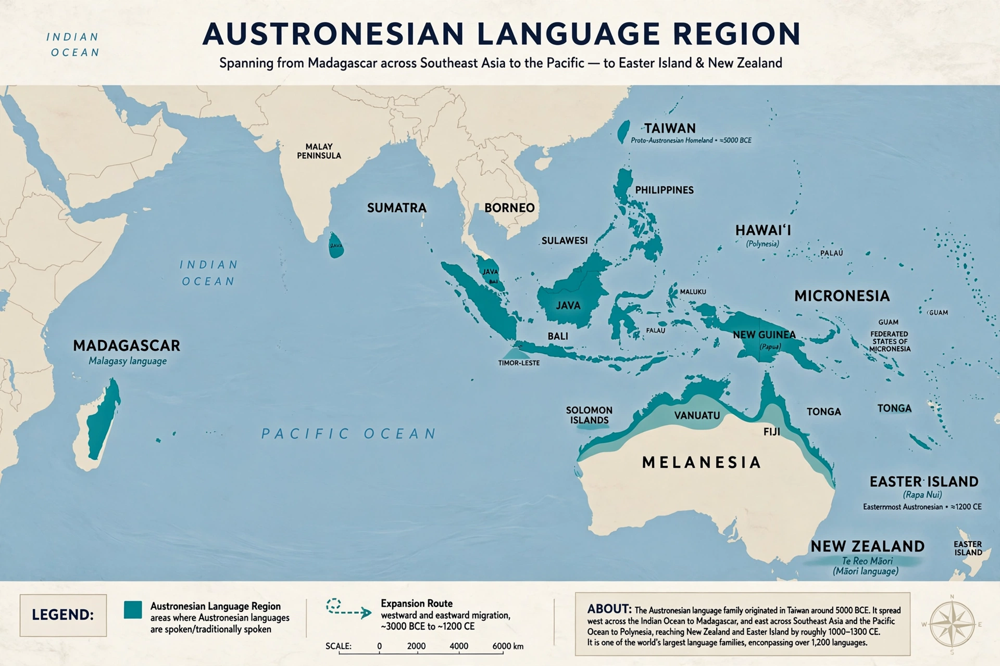

| Austronesian languages | |
 Distribution of Austronesian languages | |
| Geographic distribution | Madagascar, Maritime Southeast Asia, the Pacific, Taiwan |
|---|---|
| Number of languages | More than 1,200 |
| Major languages | Malay/Indonesian, Javanese, Tagalog (Filipino), Cebuano, Malagasy, Māori, Hawaiian, Samoan |
| Homeland | Taiwan (Formosan languages most diverse) |
The Austronesian languages are a language family widely spoken throughout the islands of Southeast Asia and the Pacific, and in Madagascar off the coast of Africa. With more than 1,200 languages, Austronesian is one of the largest language families in the world by number of languages, and before European colonisation it had the widest geographical spread of any family, from Madagascar in the west to Easter Island (Rapa Nui) in the east, and from Hawaii and Taiwan in the north to New Zealand in the south.
Linguistic and archaeological evidence places the Austronesian homeland in Taiwan, where the Indigenous Formosan languages preserve the family's greatest diversity — most of its primary branches are found only there. Beginning roughly 4,000–3,500 years ago, Austronesian-speaking seafarers spread south into the Philippines and Island Southeast Asia, then both westward to Madagascar and eastward across the Pacific in the celebrated voyaging tradition that settled Remote Oceania, reaching Hawaii, Easter Island, and New Zealand by about 1200 CE.
All Austronesian languages outside Taiwan belong to the Malayo-Polynesian branch, which includes the Philippine languages, Malay and Indonesian, Javanese, and Malagasy. Within it, the Oceanic subgroup covers the languages of Melanesia, Micronesia, and Polynesia, including Fijian, Samoan, Tongan, Tahitian, Hawaiian, and Māori.
Many Austronesian languages have relatively simple phoneme inventories — Hawaiian famously has only thirteen — and a "symmetrical voice" or focus system in which verbs mark whether the subject is the actor, patient, location, or instrument of the action. Reduplication is common for plurality, intensity, and derivation. Possession is often split between alienable and inalienable categories, and many languages distinguish inclusive and exclusive "we".